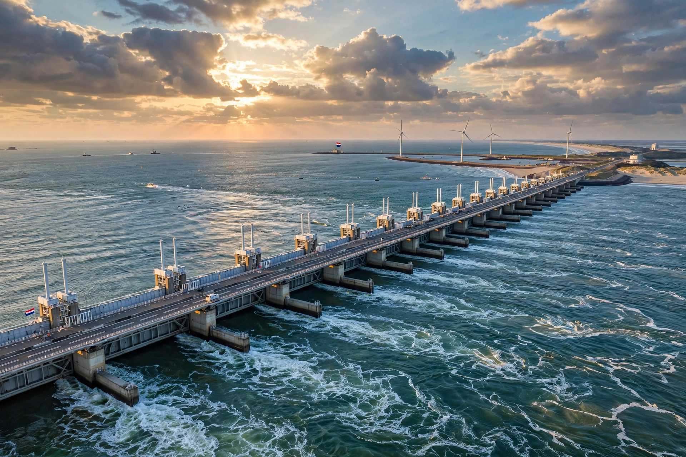

The Oosterscheldekering (Dutch pronunciation: [ˈoːstərˌsxɛldəˈkeːrɪŋ]; English: Eastern Scheldt storm surge barrier) is a storm surge barrier in the province of Zeeland, Netherlands, connecting the islands of Schouwen-Duiveland and Noord-Beveland across the mouth of the Oosterschelde estuary. The largest of the thirteen Delta Works, it is a 9-kilometre semi-open barrier of movable gates that stands open in normal weather — preserving the estuary's tidal ecosystem — and is closed only during storm surges.
| Oosterscheldekering | |
|---|---|
 The barrier from Neeltje Jans | |
| Crosses | Oosterschelde (Eastern Scheldt) |
| Location | Zeeland, Netherlands |
| Total length | 9 km (5.6 mi) |
| Construction | 1976–1986 |
| Opened | 4 October 1986 (by Queen Beatrix) |
After the catastrophic North Sea flood of 1953 killed 1,836 people in the Netherlands, the Delta Plan originally called for the Oosterschelde to be fully dammed. In the 1970s, however, fishers and environmentalists protested that a closed dam would destroy the estuary's oyster beds and unique salt-water ecology. The government compromised: a barrier with huge sliding steel gates between concrete piers, open under normal conditions.
Building the barrier required purpose-built vessels and techniques: 65 prefabricated piers — each up to about 18,000 tonnes — were floated out and set into the seabed by the lifting ship Ostrea, after the seabed had been compacted and matting laid by ships such as the Cardium. Between the piers hang 62 steel gates, each about 42 m wide and 6–12 m high. The artificial work island Neeltje Jans in the middle of the estuary now hosts an information centre and wind turbines.
The gates are lowered when water levels are forecast to exceed 3 m above NAP; automatic closure begins at +3.25 m if staff do not act. Since opening, the barrier has been closed a few dozen times, typically once or twice a year on average. A road (N57) crosses the barrier.